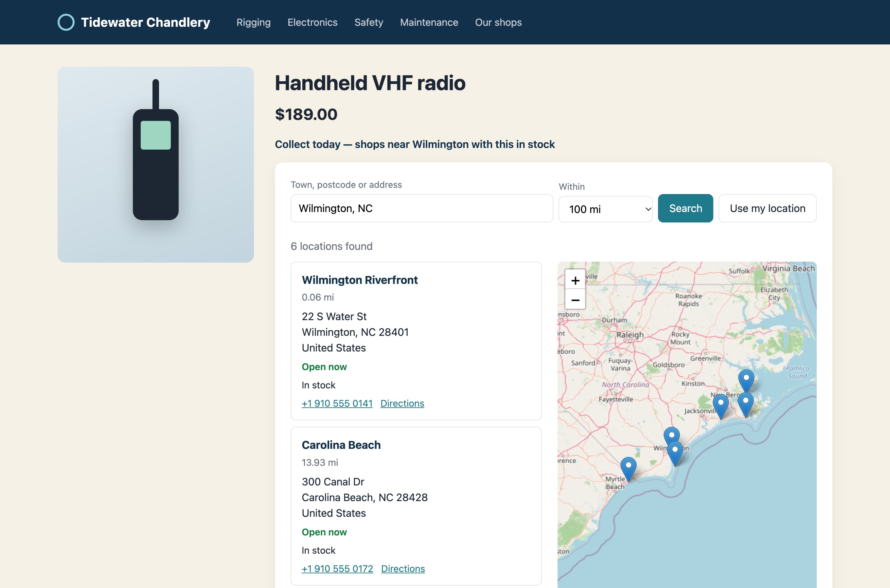
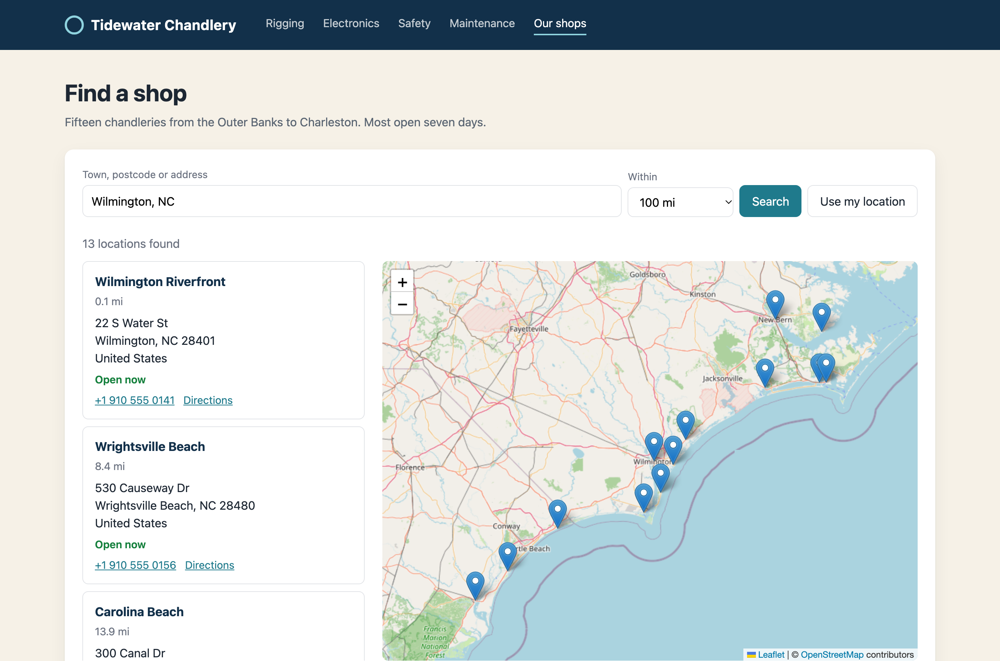
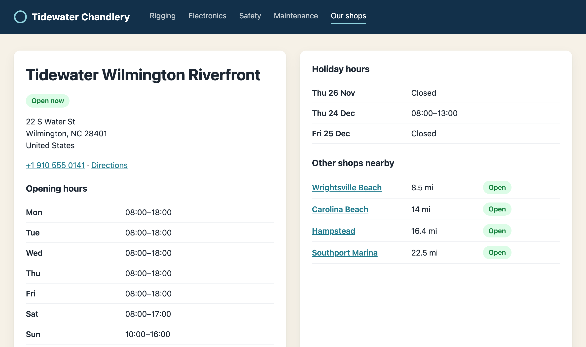
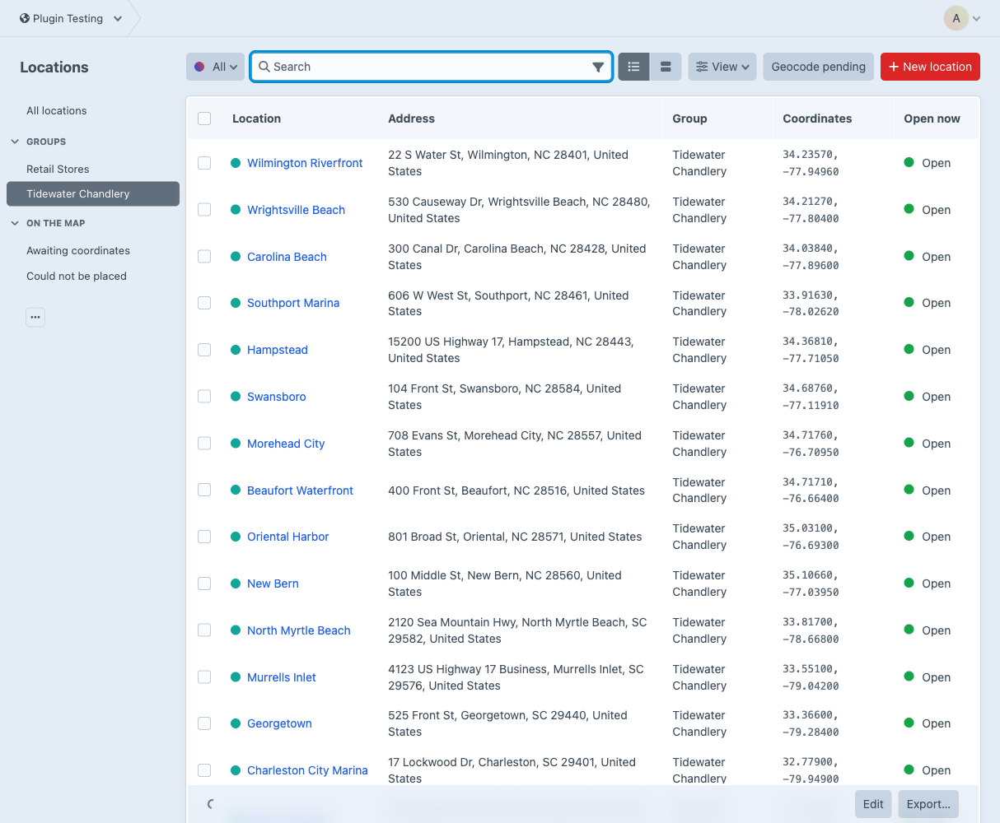
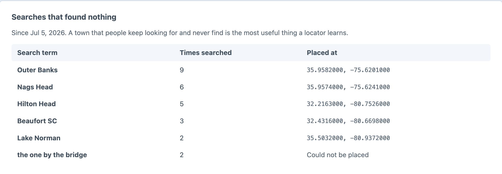

Which shop near me has it in stock?
Mapped, searchable shop locations with opening hours, radius search and Craft Commerce inventory.
WP Store Locator is the benchmark for a map and a search box. Fold does that the Craft way, then asks Craft Commerce where the stock actually is.
Link a shop to a Commerce inventory location and the locator filters to the shops that have it.

Search box, results and map, rendered on the server and enhanced by a small script.

Two passes in one query, so the expensive maths only runs on rows that could be close.
Every shop gets its hours, its own page and a link to directions.

Groups with their own field layouts and URLs, localized across sites.

The zero-result report is a list of towns that want a shop.
